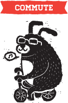

|
 |  |
Green commuting means getting from one place to another with the least use of fossil fuel. Yeah, you can ride the MRT or take the bus, but why not take it to the next level? The most practical form of that would be by riding a bike!
You may ask, 'Hold up, what has cycling got to do with DIY?' Have you ever sat in a stationary train for an hour wondering when it'll start moving again? Have you ever waited at a bus shelter for 30mins for your bus only to find it packed to the brim? Have you ever got stuck in traffic, barely moving an inch per minute in your vehicle? Get your butt on a bicycle then.
By cycling, you are independent of any external institutions like car manufacturers, petrol stations, public transport companies for your daily commute. And instead of burning up precious natural resources, you burn fats from your own body! What a great way to save the earth while keep your body fit.
It's also the loveliest way to get around town. On a bike, you're free to roam the wide roads, or squeeze into obscure tiny lanes in the neighborhood. You'll discover new things about your city that you'll never see on a bus or a car. Suddenly the whole city becomes more intimate as you discover cool new places and how they connect to each other.
- Start with some short rides to get yourself familiarized with the roads.
- Safety is always a priority, so do not ride on heavy roads if you don't feel confident enough.
- Find a bike route that makes use of park connector trails as much as possible as if you want to avoid traffic.
- Always keep a lookout for oncoming vehicles.
- When on a pavement, always look out and give way to pedestrians (because technically you're not supposed to be on their path!)
- Be polite, and don't forget your excuse me's and thank you when overtaking pedestrians.
- To avoid stinky situations, shower before you ride to reduce the bacteria on your body. Bring an extra shirt to change into upon reaching your destination.
- Plan your route ahead of time using a map, or make use of your smartphone's built-in GPS.
- Check this out – Bike Commuting in Singapore : Beginner's Series
- Reasons to Cycle | BIKEMINDED
- The real reason why bicycles are the key to better cities | Secret REpublic
- Occupy the Streets | City Girl Rides
- Cycling must be a key part of Singapore's future | Yawning Bread
- Transport Opportunities for all: The Potential of Bicycle Networks | This Big City
- Environmental sustainability and bicycles: Three reasons two wheels are great for cities | This Big City
- Brooklyn gets a great new bike lane | GOOD [video]
- Pleasures of life in the slow lane
- How biking can save cities billions of dollars in health expenses
- Car-clogged Chinese cities encourage a return to bicycles
- Dutch Cycling Embassy releases inspirational video | SF Streetsblog
- Cycle to work in Singapore? | Cycling in Singapore
- How bicycling will save the economy | Grist
- mrbrown's quick guide to bicycle commuting in Singapore